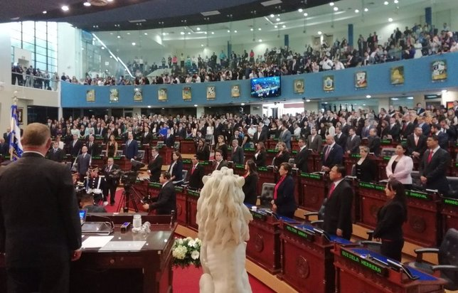

POLITICA
DE LA FRACCION DE ARENA
Varios diputados de la Asamblea Legislativa siguen sin tener oficina propia y algunos solo llegan a plenarias y reuniones de comisión (Ver noticia completa)
Desde mayo del presente año, algunos parlamentarios han tenido problemas por el espacio que les ha sido asignado para trabajar y en algunos casos optan por trabajar fuera del edificio legislativo.
EL BLOQUE GANA-FMLN DIJO QUE SE ABSTENDRÍAN DE DAR EL VOTO
Diputados regresan a la Comisión Política dictamen para elección de Sala de lo Constitucional que había firmado ARENA, PCN y PDC (Ver noticia completa)

El dictamen firmado por los partidos de derecha tuvo que regresar a la Comisión Política debido a que no contaba con los votos necesarios para ser aprobado.
TAMBIÉN SE ROMPIÓ RELACIONES CON TAIWÁN
Donald Trump someterá a evaluación relaciones de Estados Unidos con El Salvador, tras inicio de relaciones con China Popular (Ver noticia completa)

Según la Casa Blanca, es de gran preocupación para Estados Unidos el comienzo de relaciones diplomática entre El Salvador y China Popular, lo que según ellos dará lugar a una reevaluación de los lazos que los unen con El Salvador.